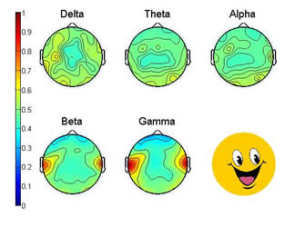
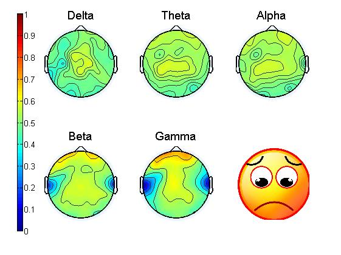
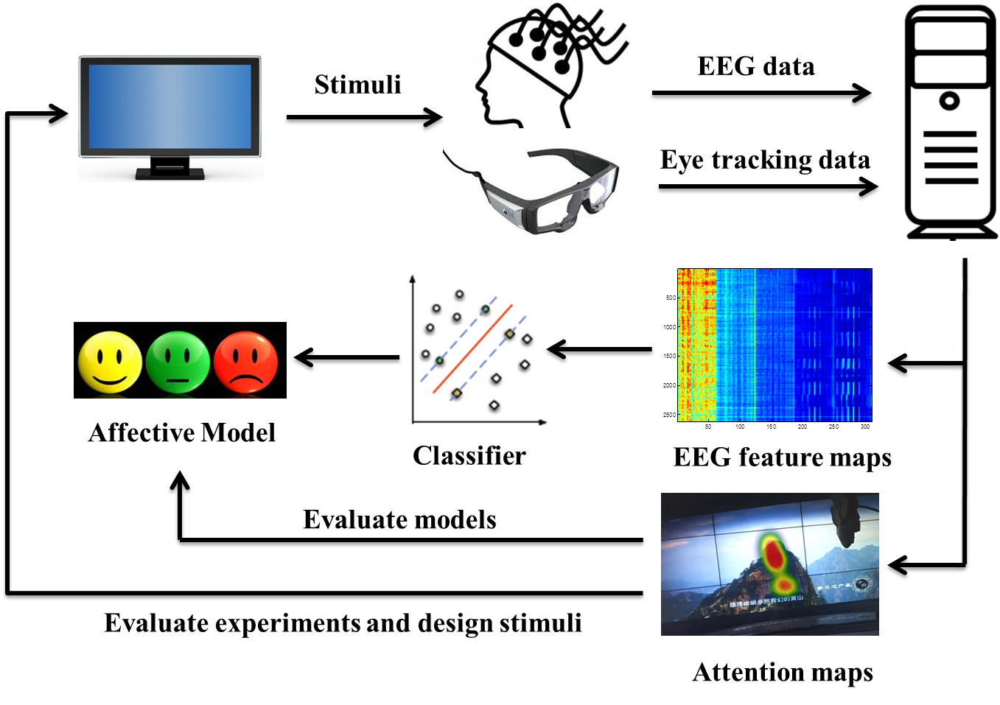

Weilong Zheng
郑伟龙
Phd Candidate
Department of Computer Science
Shanghai Jiao Tong University
Supervised by:
Bao-Liang Lu (SJTU)
Email:
weilonglive AT gmail DOT com
Phone:
+86-21-34206772
Address
Room East307, SEIEE buliding #3, Department of Computer Science,
800 Dongchuan Road,
Shanghai Jiao Tong University,
200240,China.

 Biography
Biography
- I am currently a PhD. candidate in the Center for Brain-Like Computing and Machine Intelligence , the Department of Computer Science, Shanghai Jiao Tong University. Before that I obtained my Bachelor degree from the Department of Electronic and Information Engineering, South China University of Technology in 2012. Here is my Curriculum Vitae. To find more informaion about me, please follow this webpage.
- My current research interests mainly focus on Affective Computing, Brain-Computer Interface, Machine Learning, and Pattern recognition.
Education Background
- Sept.2012 - Present PhD. student in Computer Science, Department of Computer Science and Engineering, Shanghai Jiao Tong University.
- Sept.2014 - March. 2015 Visiting student in Intelligent Systems Group, Department of Computer Science and Artificial Intelligence, University of the Basque Country, Spain.
- Sept.2008 - June.2012 Undergraduate student in Information Engineering (Talented Student Program), School of Electronic and Information Engineering, South China University of Technology.
Publications
Paper (My Google Scholar)
2016
- Wei-Long Zheng and Bao-Liang Lu, Personalizing EEG-based Affective Models with Transfer Learning, to appear in Proc. of the 25th International Joint Conference on Artificial Intelligence (IJCAI-16). [pdf]
- Wei-Long Zheng, Jia-Yi Zhu, and Bao-Liang Lu, Identifying Stable Patterns over Time for Emotion Recognition from EEG, arXiv preprint arXiv:1601.02197 (2016). [link] [Media Report]
- Wei-Long Zheng, Shan-Chun Shen and Bao-Liang Lu, Online Depth Image-Based Object Tracking with Sparse Representation and Object Detection, Neural Processing Letters, pp. 1-14, 2016. [pdf]
- Wei Liu, Wei-Long Zheng and Bao-Liang Lu, Multimodal Emotion Recognition Using Multimodal Deep Learning, arXiv preprint arXiv:1602.08225 (2016). [link]
- Yong Peng, Wei-Long Zheng and Bao-Liang Lu, An unsupervised discriminative extreme learning machine and its applications to data clustering. Neurocomputing 174: 250-264 (2016). [pdf]
- Xue-Qin Huo, Wei-Long Zheng, and Bao-Liang Lu, Driving Fatigue Detection with Fusion of EEG and Forehead EOG, to appear in Proc. of 2016 International Joint Conference on Neural Networks (IJCNN-16). [pdf]
- Li-Li Wang, Wei-Long Zheng, Hai-Wei Ma and Bao-Liang Lu, Measuring Sleep Quality from EEG with Machine Learning Approaches, to appear in Proc. of 2016 International Joint Conference on Neural Networks (IJCNN-16). [pdf]
2015
- Wei-Long Zheng, and Bao-Liang Lu, Investigating Critical Frequency Bands and Channels for EEG-based Emotion Recognition with Deep Neural Networks, IEEE Transactions on Autonomous Mental Development (IEEE TAMD), vol. 7, no. 3, pp. 162-175, 2015. [Project] [Dataset] [pdf]
- Wei-Long Zheng, Yong-Qi Zhang, Jia-Yi Zhu, and Bao-Liang Lu, Transfer Components between Subjects for EEG-based Emotion Recognition, in Proc. of the sixth International Conference on Affective Computing and Intelligent Interaction (ACII2015), 2015: 917-922. [pdf]
- Yifei Lu*, Wei-Long Zheng*, Binbin Li, and Bao-Liang Lu, Combining Eye Movements and EEG to Enhance Emotion Recognition, in Proc. of the International Joint Conference on Artificial Intelligence (IJCAI'15), 2015:1170-1176. (*contributed equally as joint first authors) [pdf]
- Wei-Long Zheng, Roberto Santana, and Bao-Liang Lu, Comparison of classification methods for EEG-based emotion recognition, in Proc. of the 2015 World Congress on Medical Physics and Biomedical Engineering (WC'15). IFMBE, 2015: 1184-1187 [pdf]
- Jia-Yi Zhu, Wei-Long Zheng, and Bao-Liang Lu. Cross-subject and Cross-gender Emotion Classification from EEG, to appear in Proc. of the 2015 World Congress on Medical Physics and Biomedical Engineering (WC'15). IFMBE, 2015: 1188-1191 [pdf]
- Wei-Long Zheng, Hao-Tian Guo, and Bao-Liang Lu, Revealing Critical Channels and Frequency Bands for EEG-based Emotion Recognition with Deep Belief Network, in Proc. of the 7th International IEEE EMBS Conference on Neural Engineering (IEEE NER'15). IEEE, 2015: 154-157. [pdf]
- Xiang-Yu Gao, Yu-Fei Zhang, Wei-Long Zheng, and Bao-Liang Lu, Evaluating Driving Fatigue Detection Algorithms Using Eye Tracking Glasses, to appear in Proc. of the 7th International IEEE EMBS Conference on Neural Engineering (IEEE NER'15). IEEE, 2015: 767-770. [pdf]
- Yu-Fei Zhang, Xiang-Yu Gao, Jia-Yi Zhu, Wei-Long Zheng, and Bao-Liang Lu, A Novel Approach to Driving Fatigue Detection Using Forehead EOG, to appear in Proc. of the 7th International IEEE EMBS Conference on Neural Engineering (IEEE NER'15). IEEE, 2015: 707-710. [pdf]
- Yong-Qi Zhang, Wei-Long Zheng, and Bao-Liang Lu, Transfer Components between Subjects for EEG-based Driving Fatigue Detection, in Proc. of the 22st International Conference of Neural Information Processing (ICONIP'15), 2015: 61-68.
2014
- Wei-Long Zheng, Jia-Yi Zhu, Yong Peng, and Bao-Liang Lu. EEG-Based Emotion Classification Using Deep Belief Networks. 2014 IEEE International Conference on Multimedia & Expo (ICME'14). IEEE, 2014: 1-6. [pdf] [poster] [GELM code from Yong Peng]
- Wei-Long Zheng, Jia-Yi Zhu, and Bao-Liang Lu. Multimodel Emotion Analysis in Response to Multimedia. 2014 IEEE International Conference on Multimedia and Expo Workshops (ICMEW'14). IEEE, 2014: 1-2. [pdf] [demo]
- Wei-Long Zheng, Bo-Nan Dong, and Bao-Liang Lu. Multimodal Emotion Recognition using EEG and Eye Tracking Data. 2014 36th Annual International Conference of the IEEE Engineering in Medicine and Biology Society (EMBC'14). IEEE, 2014: 5040-5043. [pdf] [poster]
- Yong Peng, Jia-Yi Zhu, Wei-Long Zheng, and Bao-Liang Lu. EEG-Based Emotion Recognition with Manifold Regularized Extreme Learning Machine. 2014 36th Annual International Conference of the IEEE Engineering in Medicine and Biology Society (EMBC'14). IEEE, 2014: 974-977. [pdf] [poster]
- Jia-Yi Zhu, Wei-Long Zheng, Ruo-Nan Duan, Yong Peng and Bao-Liang Lu. EEG-based Emotion Recognition Using Discriminative Graph Regularized Extreme Learning Machine. 2014 International Joint Conference on Neural Networks (IJCNN'14). IEEE, 2014: 525-532. [pdf]
- Xuemin Zhu, Wei-Long Zheng, Bao-Liang Lu, Xiaoping Chen, Shanguang Chen and Chunhui Wang. EOG-based Drowsiness Detection Using Convolutional Neural Networks. 2014 International Joint Conference on Neural Networks (IJCNN'14). IEEE, 2014: 128-134. [pdf]
- Shan-Chun Shen, Wei-Long Zheng, and Bao-Liang Lu. Online Object Tracking based on Depth Image with Sparse Coding. the 21st International Conference of Neural Information Processing (ICONIP'14). 2014: 234-241. [pdf]
- Simin Zhao, Xiangming Xu, Weilong Zheng, Jianwen Ling, Registration of Depth Image and Color Image Based on Harris-SIFT. IEEE 2012 Second International Conference on Electric Information and Control Engineering (ICEICE), 2012. [pdf]
Thesis
- Wei-Long Zheng, "A Study on Fatigue Detection under Complex Driving Environment," B.E. Thesis (in Chinese), South China University of Technology, 2012. [pdf] [demo] [PPT]
Patents (SooPat)
- "A Method and System of Robot Navigation Based on Color Coding Identification", Second Applicant, Application ID: 201210289058.3. (Issued)
- "A Method of Key Frame Recognition in Video Stream", Second Applicant, Application ID: 201210480917.7.
Projects
EEG-based Emotion Recognition in response to Multimedia
 
Multimodal Emotion Analysis Combining EEG and Eye Tracking Data

Honors and Awards
- Excellent Ph.D Student Scholarship of Yang Yuanqing Education Fund, SJTU 2016
- National Scholarship for Graduate Student, Ministry of Education, China 2015
- Excellent Party Member of the School of Electronic, Information and Electrical Engineering SJTU 2015
- Postgraduate Academic Excellence Scholarship of SJTU 2014
- Outstanding Graduate Scholarship in SCUT 2012
- Second-class scholarship in SCUT 2011
- National Scholarships Inspirational in SCUT 2010
- National Scholarships Inspirational in SCUT 2009
- Excellent League Member in Guangdong Province 2008
Research Activities
- Teaching Assistant for "Neural Network Theory and Applications (F033574)", Shanghai Jiao Tong University, Spring 2015, Spring 2016.
- Sub-reviewer: IEEE Trans. Affective Computing, IEEE Trans. Autonomous Mental Development, ICONIP'15, ICONIP'14, etc.
Useful Links
Neuroimaging Analysis Tools
- EEGLAB - an open source environment for electrophysiological signal processing
- LORETA - low resolution brain electromagnetic tomography
- Brain Connectivity Toolbox - this MATLAB toolbox implements graph theory metrics for use in neuroscience
- Causal Connectivity Toolbox - this toolbox implements 'causal connectivity analysis', based on Granger causality
- eConnectome - an open-source MATLAB software package for imaging brain functional connectivity from electrophysiological signals
Journals and Conferences
- Our Lab: Center for Brain-Like Computing and Machine Intelligence
- Refered Journals: IEEE TPAMI, Int. J. Computer Vision(Springer), IEEE TNN, IEEE TAC, Machine Learning(Springer), Pattern Recognition(Elsevier), Information Sciences(Elsevier), Neural Networks(Elsevier) ...
- Top Conferences: NIPS, AAAI, ICML, IJCAI, ICCV, CVPR, ECCV, ...